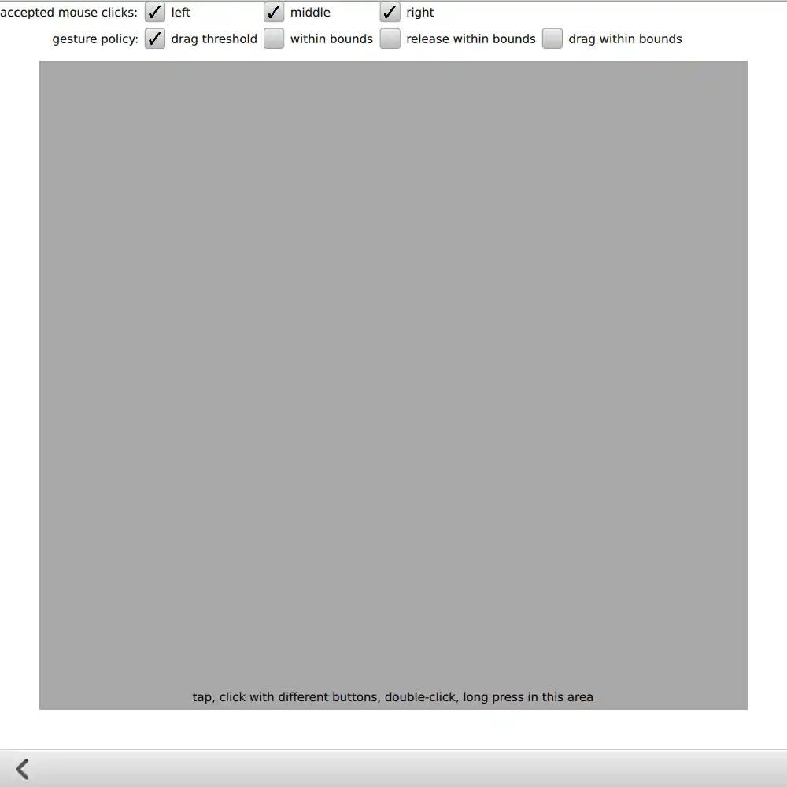
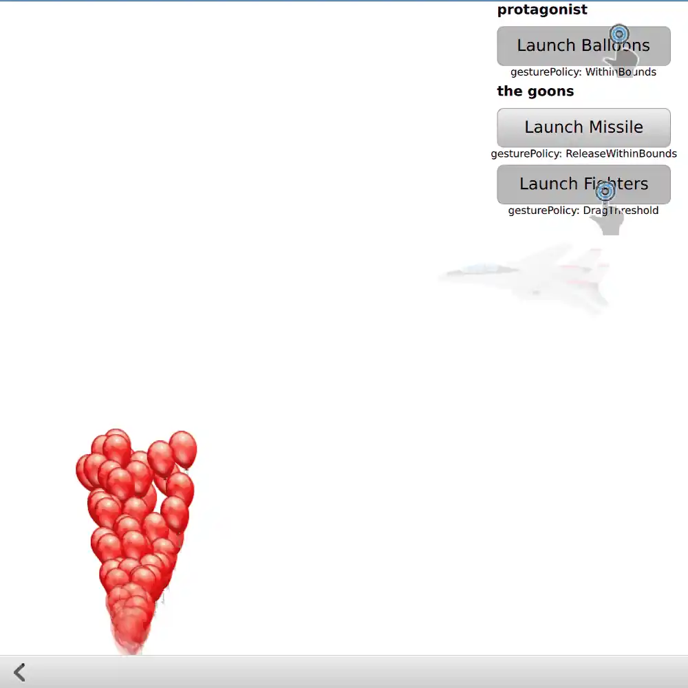
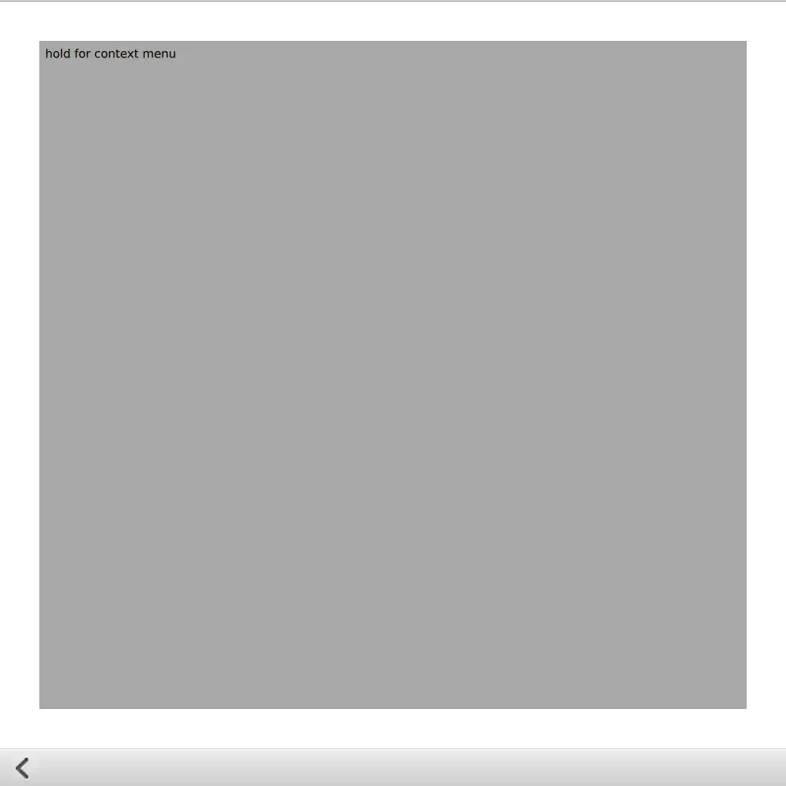
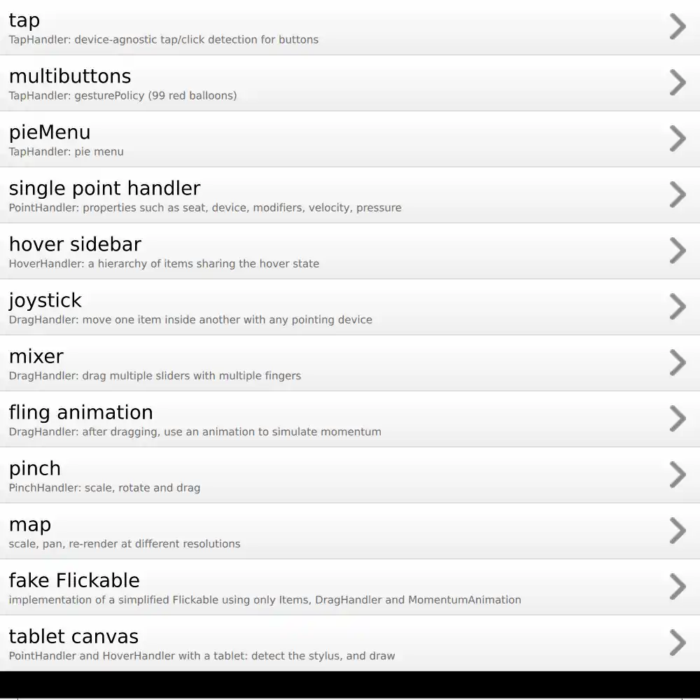
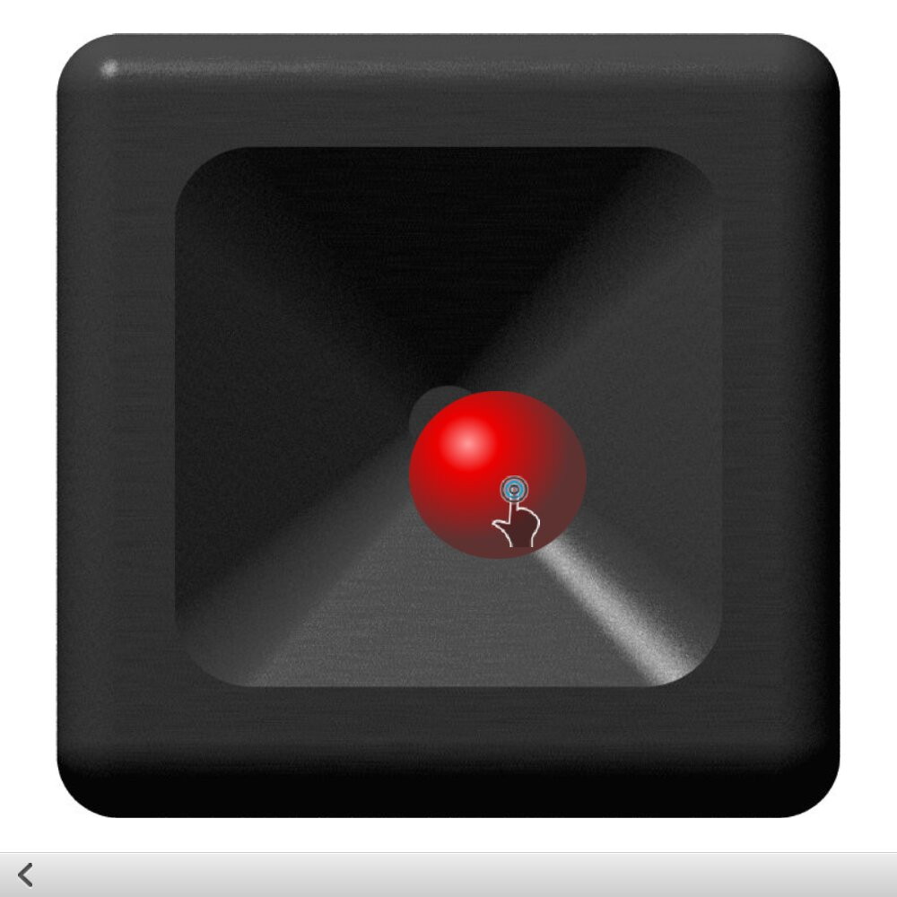
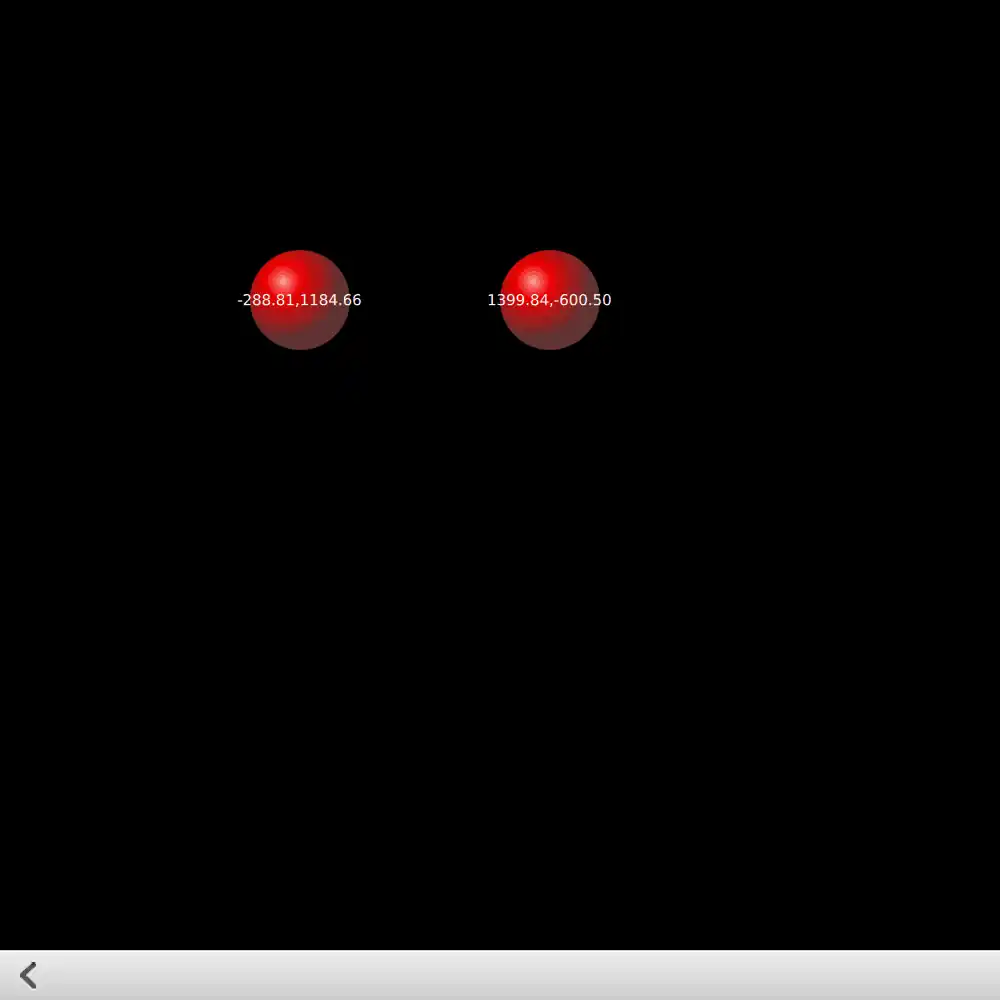
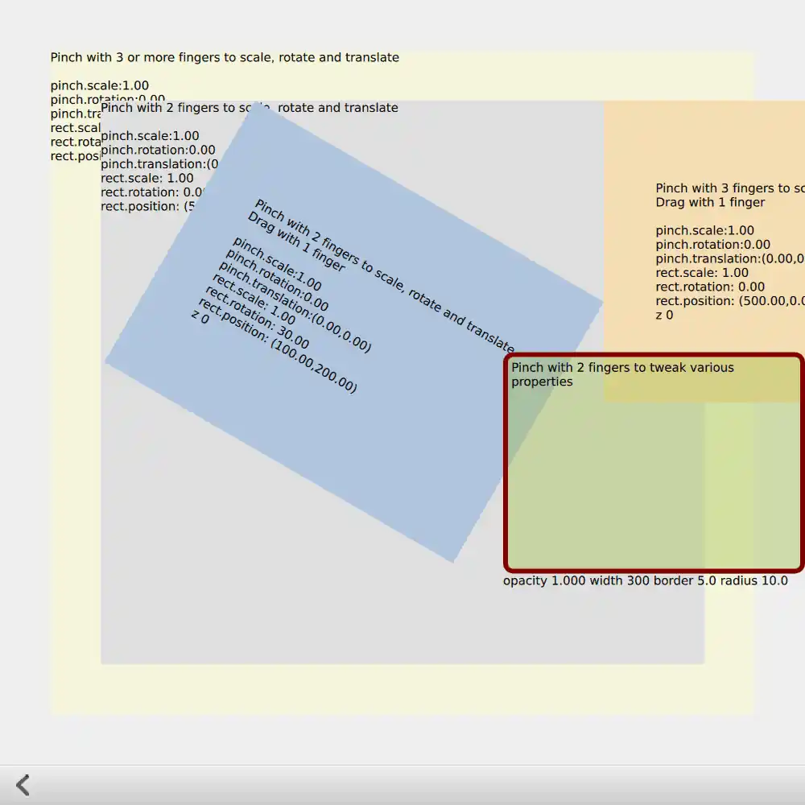
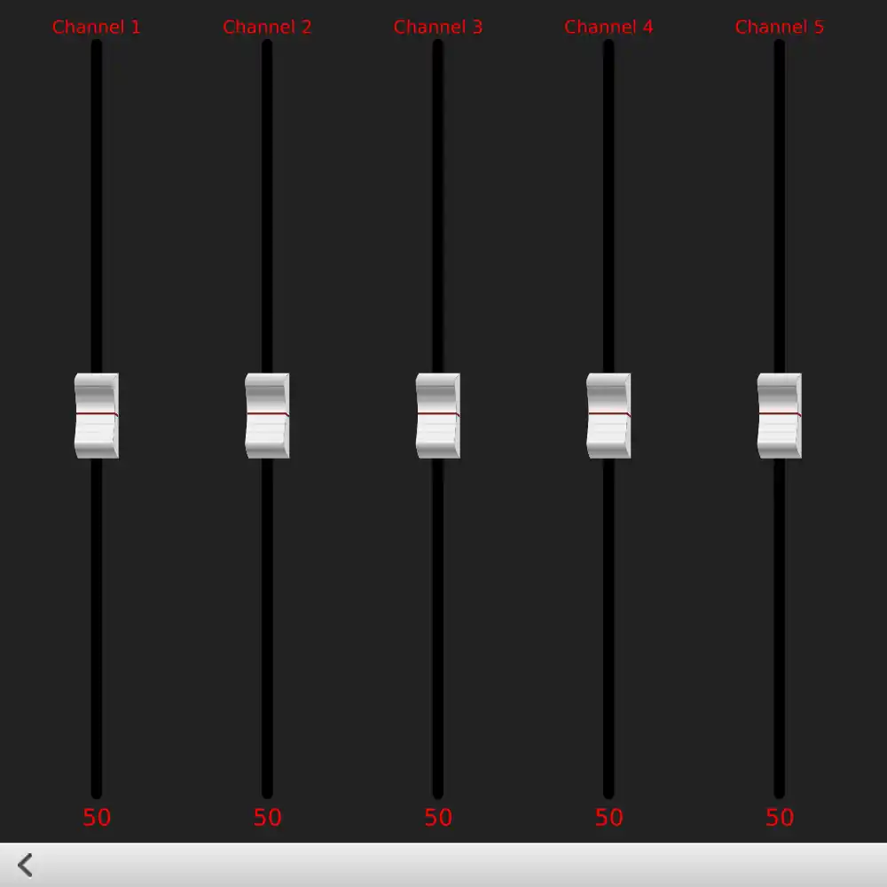
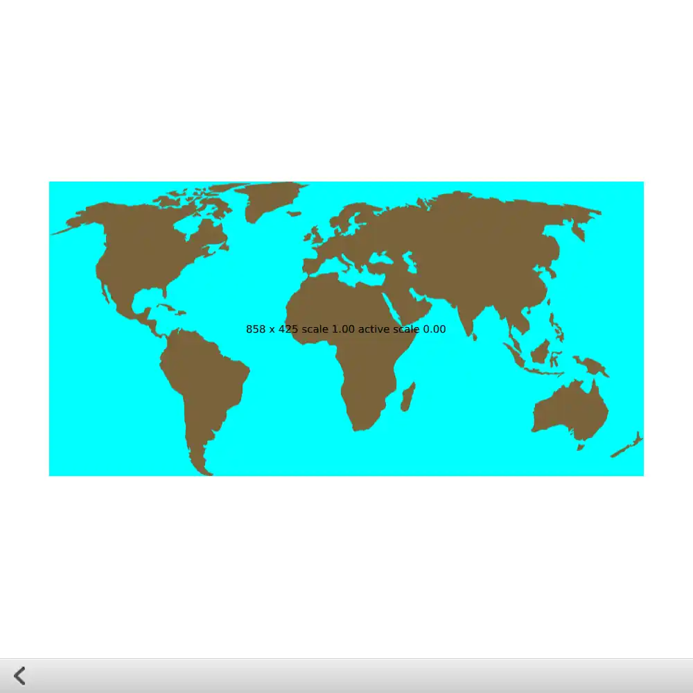
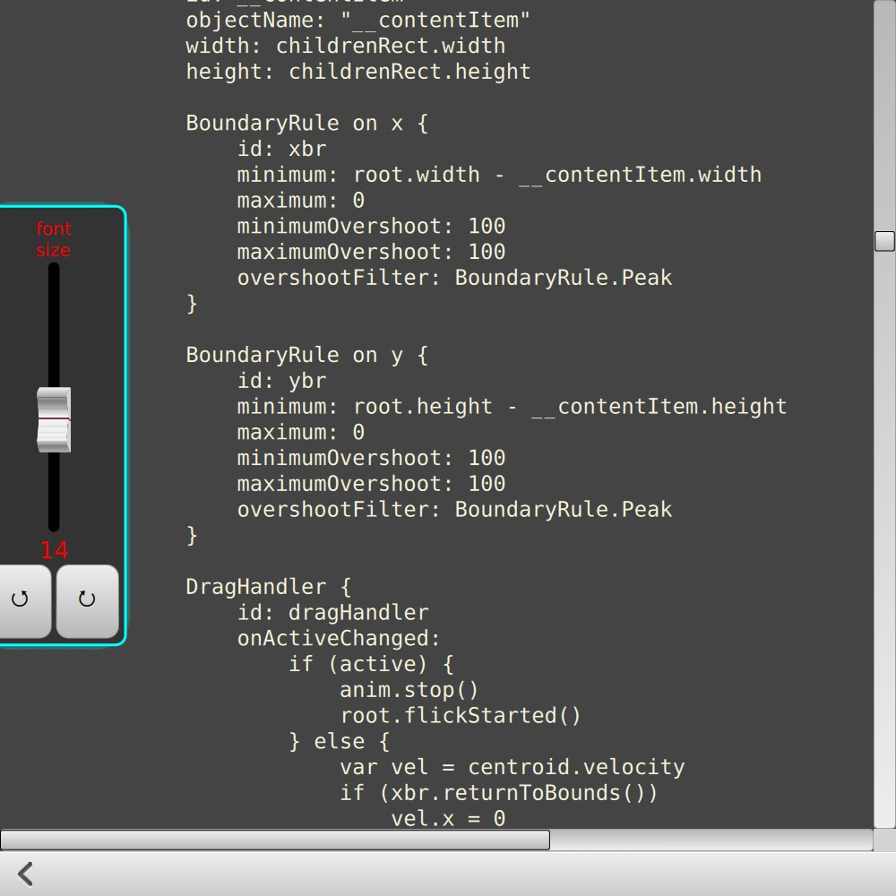

Qt Quick Examples - Pointer Handlers
Shows how to use Qt Quick Input Handlers in interactive components.
Qt Quick Controls contains pre-built components that are sufficient for many kinds of user interfaces; but you may sometimes find a need to write such components "from scratch". In that case, you will need to make substantial use of Pointer Handlers. This is a collection of small examples that show how to implement some common and less-common interaction patterns.
If you build the example as an executable, you can choose pages from a top-level ListView. The TouchpointFeedbackSprite and MouseFeedbackSprite components show how to use PointHandler to provide feedback about what the user is doing with the pointing devices: these components are always visible throughout the example, and do not interfere with interaction anywhere else. These components are handy for reuse if you ever need to do a video or live demonstration of a user interface.
Alternatively, some of the individual QML files can be run on the command line with the qml tool, as a quick reminder to see how a particular kind of component can be built.
TapHandler

The "tap" page shows how to detect touchscreen taps, long-presses, and mouse clicks with different buttons. You can also try out the different gesturePolicy values.
Multi-tap Buttons
On this page are three custom Button components, with different gesturePolicy values: one button requires you to keep your finger or mouse within the button during the whole time from press to release; one will execute even if you drag outside the button and then drag back in before releasing; and one will exit its pressed state if you drag a little past the system-wide drag threshold. If you try this example on a touchscreen, you should be able to interact with all three buttons at the same time with different fingers.

Pie Menu
This page shows how to write a touchscreen-friendly pie menu that animates into view when activated by a long-press. You can select a menu item by dragging from the center position onto one of the sectors and releasing. If you drag outside the menu, or release in the middle of the menu, nothing is selected. If you drag outside the grey viewport, the menu is cancelled.

PointHandler
On the "single point handler" page, PointHandler provides feedback from some of the properties that can be found in SinglePointHandler::point and handlerPoint::device. If you have built the example as an executable, you will see this feedback at the same time as the feedback from the PointHandlers in the main pointerhandlers.qml file.

The "tablet canvas" page uses PointHandler to uniquely detect different types of pointing devices, so that if you have a drawing tablet connected to your computer, you can draw on the Canvas item with different types of stylus: pen, airbrush or marker. You can "erase" strokes with the stylus eraser (done here by drawing on top with the background color). Several HoverHandlers provide feedback about which type of stylus or eraser is detected.
HoverHandler
The "hover sidebar" page shows how to detect when the mouse is hovering a button component and its container at the same time. The propagation can be disabled by setting the HoverHandler::blocking property. You can try out all combinations of HoverHandler and MouseArea here, to compare how they handle hover detection. And one more HoverHandler is used to show the current mouse position in scene coordinates.
You can also verify that the HoverHandler on the animated "platform" is hovered whenever it slides under the mouse cursor.
DragHandler
The "joystick" page simply has a DragHandler dragging an Image. A State with AnchorChanges unlocks the anchors so that dragging is possible; and an AnchorAnimation animates the knob's return to the center position when released.

The "fling animation" page demonstrates one use of the DragHandler::centroid::velocity property, which simply makes the value from QEventPoint::velocity() available in QML. The MomentumAnimation component that is used in this example shows one way to simulate phyics (momentum and friction) without resorting to heavier solutions.

PinchHandler
The "pinch" page demonstrates multiple PinchHandlers: some require two fingers and some require three, to perform the usual scaling, rotation and translation, with constraints managed via PinchHandler's axis min and max properties. One of the PinchHandler instances is used to manipulate different Rectangle properties rather than position, scale and rotation. Various PinchHandler properties are bound in various ways. You should be able to manipulate each instance uniquely. Some items also have DragHandlers and TapHandlers.

Interoperability
Sliders
The "mixer" page demonstrates the use of multiple handlers inside a ListView delegate. You can interact with multiple Slider components simultaneously, and you can flick the ListView sideways.
- A DragHandler allows you to start dragging anywhere along the "track" where the slider knob can slide. Because the default snapMode is
DragHandler.SnapAuto, the knob will snap into a position centered under the mouse or touchpoint after you have dragged past the system-wide drag threshold. - A WheelHandler directly adjusts the
yproperty of the knob Image. - A BoundaryRule prevents either the DragHandler or the WheelHandler from dragging the knob too far.
- A TapHandler provides one more gesture than a typical
Slidercomponent would have: you can tap on the knob.

Map
The "map" page demonstrates dragging, transformation and re-scaling an SVG Image. You should be able to zoom into a particular location on the map; and if the zoom level is changed substantially, Image::sourceSize is changed to request the SVG to be re-rendered at a different resolution. Dragging vertically with two fingers activates a DragHandler that manipulates a Rotation transform to tilt the map.

Fake Flickable
The "fake Flickable" page contains an attempt to reproduce much of the functionality of Flickable using discrete pointer handlers and animations. Flickable is a complex component, but here you can see one way of separating the individual behaviors that it provides, in case you would like to have only part of the functionality without the complexity.
There's also a slide-out "drawer" component holding a few more pointer-handler-powered controls.
